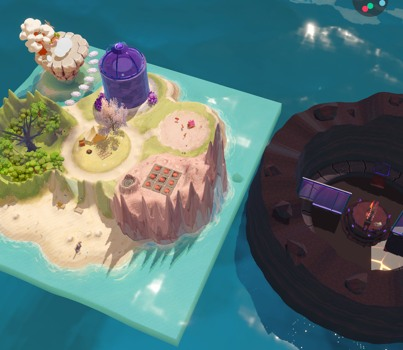
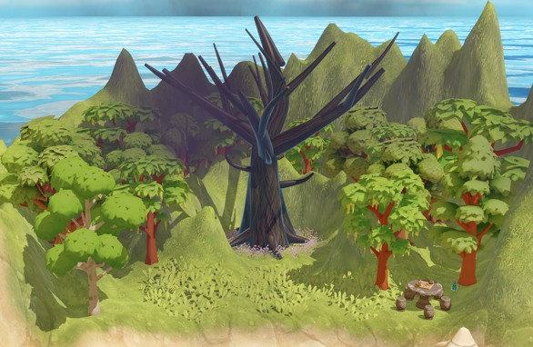
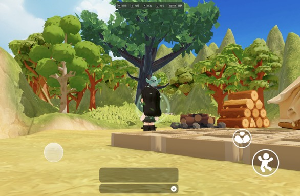
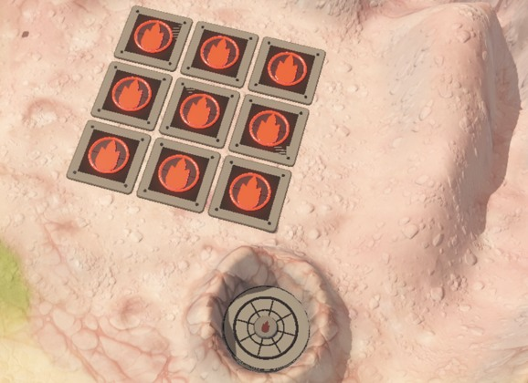
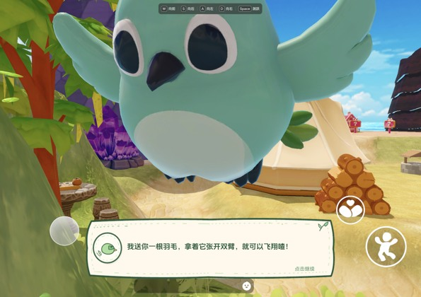

故事与我的分工
两名玩家从沙滩的大钟出发，跟随动物的线索探索小岛，最后救出蜥蜴，回到沙滩修复大钟。
我负责故事主线、角色对话、任务流程与双人机关设计，并借助 AI 把构思做成可游玩的场景和机关。
百校造百岛 · 双人合作解谜
从一次敲钟，到一座岛复苏。

两名玩家从沙滩的大钟出发，跟随动物的线索探索小岛，最后救出蜥蜴，回到沙滩修复大钟。
我负责故事主线、角色对话、任务流程与双人机关设计，并借助 AI 把构思做成可游玩的场景和机关。

敲钟召唤向导。两人各找四个贝壳，解锁按钮并开门，进入森林。
找到净雾之泉、生芽之露和繁茂之华，让枯树长出树冠。小鸟送出能滑翔的羽毛，并指路去找羊。
两人在紫色房子里配合生成、锁定台阶并召唤云朵。登岛后，用羽毛滑翔帮助云团羊克服恐惧。
解开花瓣兔的三个谜语，拿到种子，再踩亮九宫格并通过传送阵进入火山。
通过火山的双人平台救出蜥蜴，带它回主岛获得金属块，修好最初那口钟。


向导和动物的对话告诉玩家接下来可以做什么，场景变化则告诉他们刚才的操作起了什么作用。古树长出树冠、九宫格全部亮起，都是玩家能直接看到的结果。




我想让玩家过一关之后，还记得自己在上一关做过什么。治愈古树时，玩家先知道羽毛能滑翔。到了天空岛，他们用羽毛帮助云团羊，森林里的那段经历才有了新的用处。
在实现上，我先写清道具的用途、机关的触发条件和两名玩家各自要做什么，再借助 AI 把这些设定做成可操作的场景。